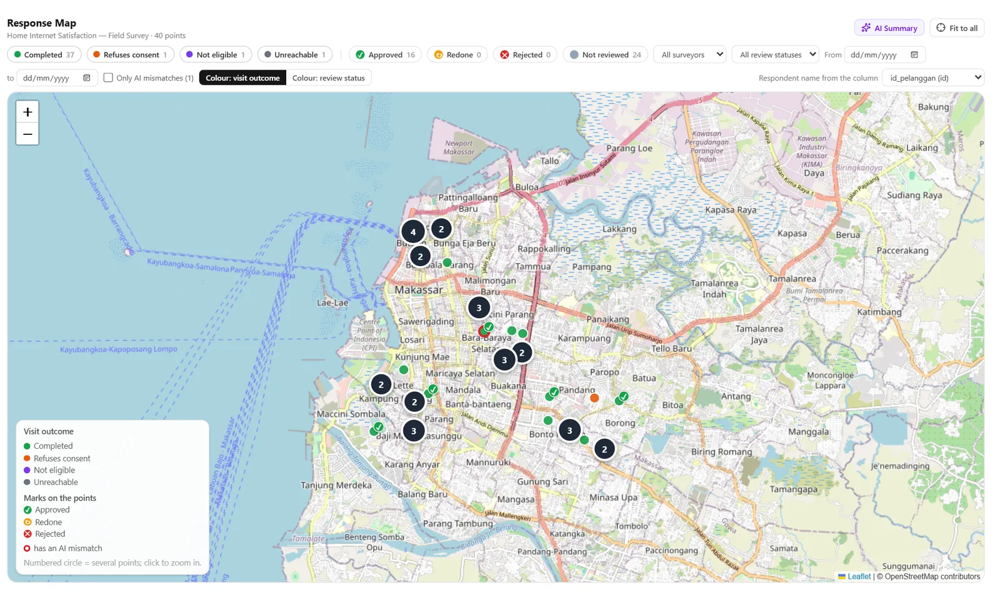

01 / 06
The fear
The interview was never actually taken — the form was filled in at home.
The proof
A GPS point on every interview
When the interviewer starts an interview, the app takes a location fix and stores it with the response, together with its accuracy in metres and the time. Every visit becomes a point on the map — including the ones that ended in a refusal.
- Coloured by visit outcome: completed, refused, not eligible, unreachable
- Filter by interviewer, review status or AI mismatch
- Click a point to open that respondent and their answers
Field survey
